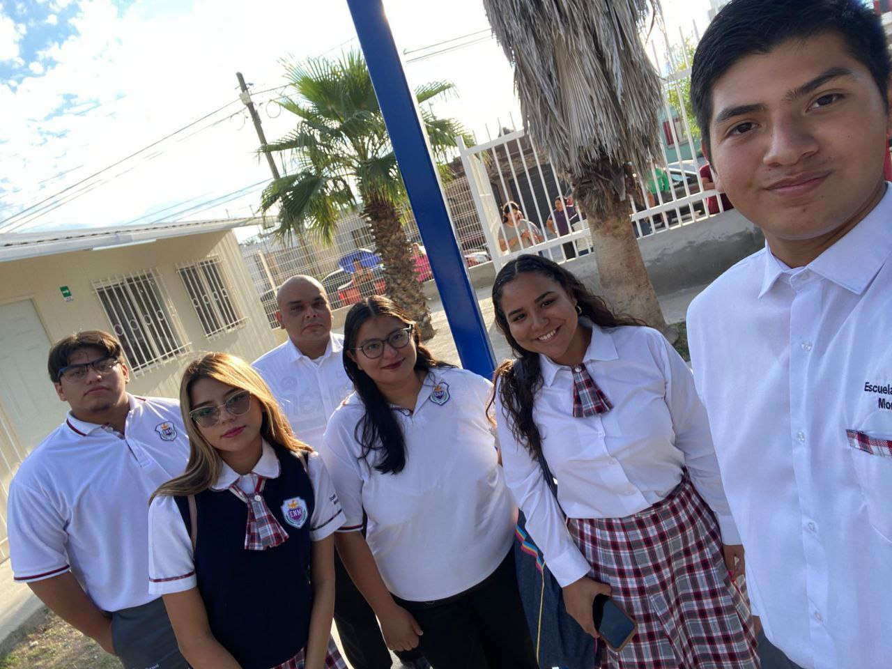
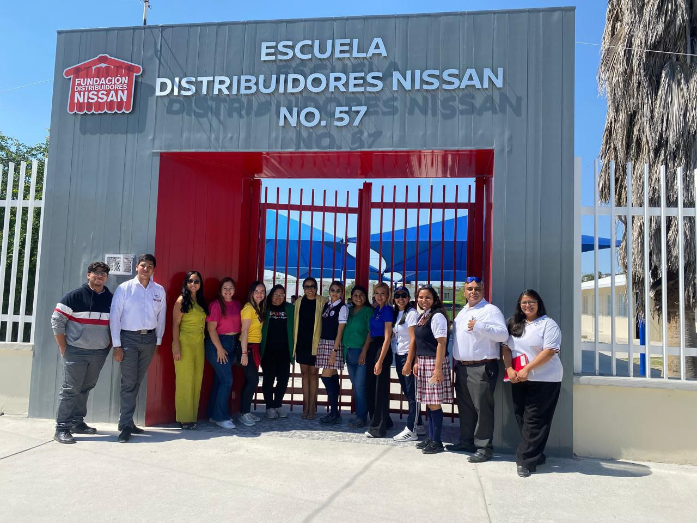
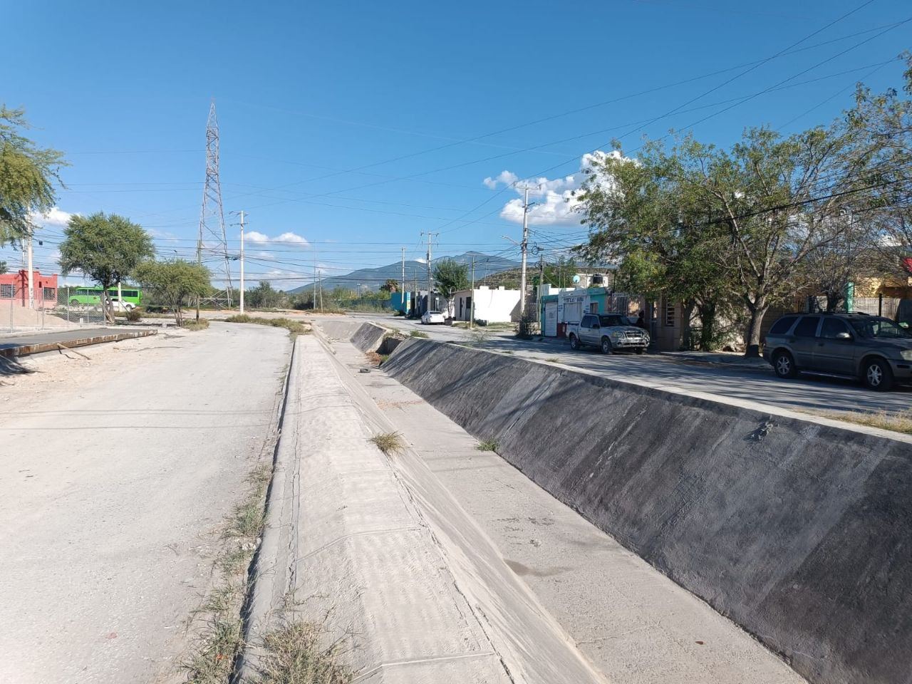

Bienvenido/a al EVA
Bienvenidas y bienvenidos al Entorno Virtual de Aprendizaje (EVA) diseñado especialmente como un recurso de orientación, acompañamiento y reflexión para quienes cursan la asignatura Análisis de Prácticas y Contextos Escolares.


Este EVA es el resultado del trabajo de recopilación de experiencias como estudiante normalistas que, a partir de propias experiencias en las prácticas escolares, observaciones en aula, investigaciones pedagógicas y propuestas didácticas, se ha creado un espacio interactivo y funcional que busca facilitar el aprendizaje, la comprensión crítica y la vinculación teórica-práctica del que hacer docente.
¿Por qué esta guía?
Durante la formación inicial, la asignatura de Análisis de Prácticas y Contextos Escolares representa una oportunidad para observar de manera consciente el entorno educativo, identificar los desafíos reales de la docencia y comprender el papel del maestro como agente transformador. Por ello, este entorno tiene como finalidad ofrecer herramientas, actividades, lecturas clave, foros de reflexión y recursos digitales que apoyen el proceso formativo desde una perspectiva situada y significativa.
🔍 Contexto Escolar
La institución educativa se ubica en una zona accesible, con características urbanas, lo que facilita la llegada de estudiantes de distintas áreas cercanas. A continuación se muestra su localización geográfica:
🔍 Calles al rededor de la escuela

Arroyo seco, encausado, al lado norte de la escuela

Calle detras de la escuela